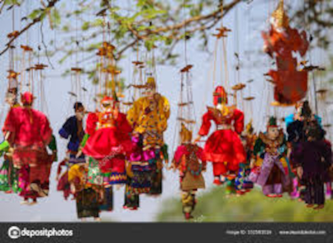
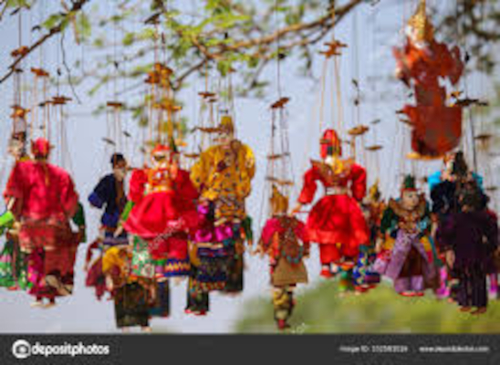
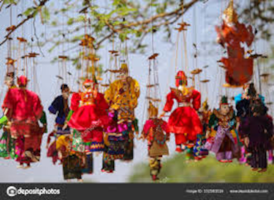

Расположенный центральной Мьянме, всего в 4 часах езды от Мандалая , Баган является одним из величайших археологических памятников в мире. Посетите этот удивительный исторический город, в котором расположено более 2200 храмов, больших и малых. Расположенный среди густой зелени в бассейне реки Иравади с туманными горами вдалеке, Баган наверняка очарует вас своим мистическим видом. Храмы возвышаются над кронами деревьев, представляя посетителям идеальный пейзаж. Баган был первой столицей Языческого королевства между 9 и 13 веками. Более 10 000 буддийских храмов, пагод и монастырей были построены в период расцвета Королевства с 11 по 13 века. Сегодня около 2200 храмов и пагод все еще сохранились и находятся под тщательным контролем правительства. Храмы являются частью археологической зоны Баган. Они содержат резные фигурки, фрески и статуи Будды, которые, безусловно, завораживают и доставляют удовольствие. исследовать. Из 2200 сайтов регулярно посещаются лишь несколько. Будучи главным туристическим направлением страны, Баган предлагает бесчисленные лицензированные туристические транспортные услуги, которые помогут туристам насладиться этим прекрасным местом. Помимо храмов, посетители также могут насладиться поездкой по реке Иравади, жизненному пути Мьянмы. Отправьтесь в круиз из Мандалая в Баган и насладитесь прибрежной растительностью, успокаивающим речным бризом и не говоря уже о достопримечательностях и звуках жизни вдоль реки. По пути вы также сможете насладиться захватывающими видами на гору Сагайн, Пакокку, Мьингьян и другие места.
История говорит нам, что Баган был основан во 2 веке нашей эры и укреплен в 849 году нашей эры королем Пьинбья, преемником основателя Багана. Город был столицей Языческой империи с 1044 по 1287 год. За это время правители и богатые подданные построили более 10 000 религиозных памятников. За это время город процветал и увеличивался в размерах. Это был центр светских и религиозных исследований. Языческая империя рухнула в 1287 году.
